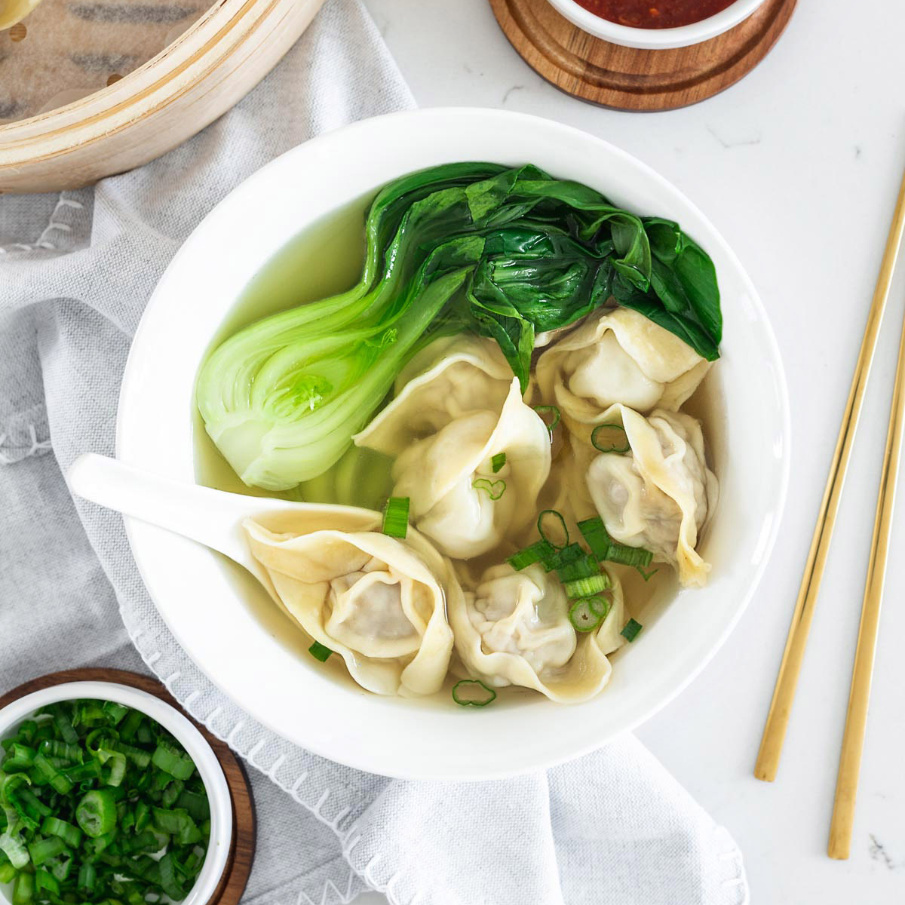

Wonton Soup

Homemade wonton soup
This homemade wonton soup is filled with juicy pork and prawn wontons, and a light broth.
It is easy to make, freeze and have later as a late night pick-me-up.
Ingredients
Meat
Seafood
Produce
- 1 Bok choy
- 2 Garlic cloves, smashed (6)
- 1 tbsp Ginger
- 1/3 1 cm Piece ginger
- 3 Shallot green onion
Canned goods
Condiments
- 2 1/2 tbsp Soy sauce, light
Pasta & Grains
- 40g Egg noodles per person, dried
Baking & Spices
Oils & Vinegars
Bread & Baked Goods
Beer, Wine & Liquor
- 3 1/2 tbsp Chinese cooking wine